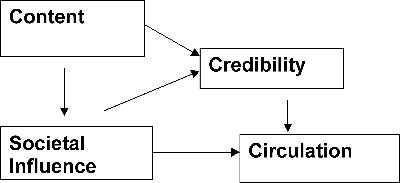

|
Seminar in Media Analysis
JOMC 302, Spring 2002
Instructor: Philip Meyer
philip_meyer@unc.edu
Text: Leo Bogart, Commercial Culture: The Media
System and the Public Interest, Transaction, 1995, 2000.
Journalism has always been the product
of tension between the goals of profitability and social responsibility.
The ideal resolution was described by Hal Jurgensmeyer, then vice president/operations
of Knight Ridder when I joined its corporate staff in 1978. The newspaper�s
main product, he said, is neither news, nor entertainment, nor information.
It is influence. A good newspaper produces two kinds of influence: societal
influence, which is not for sale, and commercial influence, which is for
sale. But the two are closely connected because social influence adds value
to the commercial influence. This model provides the economic justification
for quality journalism.
Wall Street�s model does not acknowledge
this connection. It views a news medium as a platform for delivering eyeballs
to advertisers. All else is cost. This seminar will seek evidence to test
both the Jurgensmeyer model and the Wall Street model. If quality in journalism
is related to profitability in the long run, investors should know that.
If the relationship does not exist, we need to discover ways to either
create such a relationship or to find other sources of support for the
journalism that society needs.
The Preliminary Model

|
Content Variables
1. Editing accuracy: use
of database searching to find spelling and usage errors in our sample newspapers.
2. Readability: rating each
of our sample newspapers by the standard formulas.
3. Content that causes trust:
start with sources.
4. Public service content:
extension of the Brack model.
5. Reporting accuracy: pilot
survey of four newspapers in two markets.
6. News hole: comparative
size, absolute and relative. Examine Sept. 12 for an evaluation of adaptability.
Ratio of staff to wire copy. Number of wire services used.
7. Editorial vigor: the Thrift
index
8. The national and international
report: evaluate it with a market-basket model.
Media Variables
1. Person power: estimate
staff size by counting unduplicated bylines in a given time frame and relate
to circulation size. Use Inland Daily Press guidelines to establish norms.
2. Staff diversity: relate
to community diversity.
3. Training: level of training
effort in the company.
Community Variables
1. Diversity (2000 census)
2. Participation (Voter turnout in the
2000 presidential election)
3. Social Capital (Trust in
people and institutions)
Related Issues
1. The golden age of journalism:
Did it exist? How can we identify it?
2. Wall Street analysts:
The role of information in investor decision making.
3. Advertisers: Can they
be convinced that more than eyeballs matter?
4. The decline of the copy editor.
Status
of the last line of defense against quality degredation..
5. Industry standards. Let�s
replicate Bogart�s survey of editors to see if quality definition has changed
today.
6. The marketing approach.
Does it help or hurt the quality of media?
Reading and Discussion Schedule
Our search for theoretical
context will take us down three paths:
1. Social capital theory. Robert
Putnam and Francis Fukuyama look at it from political science and Jay Rosen
relates it to the public journalism movement.
2. The theory of the firm. The sense
that something is wrong with the way capitalism is structured in the USA
is not confined to media companies.
3. History and biography. What motivated
the philosopher kings of the media business?
Each member of the seminar will
choose one book or combination of readings for reading, reflection, and
sharing with the rest of us. All are encouraged to sample liberally from
this list.
Discussion dates:
| Jan.
15 |
David Boyle, The Sum of Our
Discontent: Why Numbers Make Us Irrational, 2001; Ted Goertzel, �Myths
of Murder and Multiple Regression,� Skeptical Inquirer, January/February
2000. |
|
|
| Jan.
22 |
Lawrence E. Mitchell, Corporate
Irresponsibility: America�s Newest Export, 2001. Gilbert Cranberg et
al, Taking Stock: Journalism and the Publicly Traded Newspaper Company,
2001. (Two discussion leaders.) |
|
|
| Jan.
29 |
Jane M. Cote, Associate Professor,
College of Business and Economics, Washington State University-Vancouver,
guest speaker. Topic: How Investors Make Decisions |
|
|
| Feb.
5 |
Howard Gardner et al, Good Work:
When Excellence and Ethics Meet, 2001 |
|
|
| Feb.
12 |
Leo Bogart, Press and Public:
Who Reads What Where When and Why in American Newspapers, 1989 |
|
|
| Feb.
19 |
Francis Fukuyama: The Great
Disruption; Human Nature and the Reconstitution of Social Order, 2000 |
|
|
| Feb.
26 |
Keith Stamm, Newspaper Use and
Community Ties, 1985 |
|
|
| Mar.
5 |
Robert Putnam: Bowling Alone:
The Collapse and Revival of American Community |
|
|
| Mar.
12 |
Spring Break |
|
|
| Mar. 19 |
Jay Rosen, What Are Journalists
For?,1999 |
|
|
| Mar. 26 |
Alex Jones and Susan Tift, The
Trust: the Private and Powerful Family Behind the New York Times, 1999;
Katharine Graham, Personal History, 1997. |
|
|
Apr. 2,
9, 16,
23, 30 |
Each member of the seminar will
produce a publishable paper related to the topic. Each will present his
or paper to the class for comment and helpful criticism in April. |
Status
of the Quality Project |